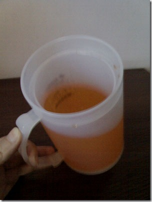
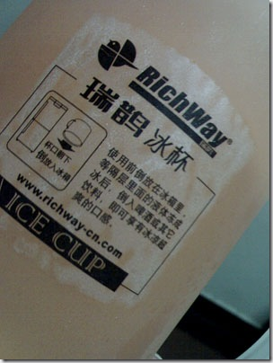

感受支付宝
去年英雄会前后到的北京，而今年离开北京也是在英雄会的前后。时间匆匆便是一年，一面是无有所得，另一面则是心性练得越发的沉稳了。有很多东西渐渐地去做、去感受、去蹉跎，慢慢地也就明白了。所以人嘛，不要怕错，不要怕烦，不要怕没成绩，怕的是没思考。走过了路，摔过了跟头，跟没事人一样，那便是白经历了，老天爷掉块宝在他身边，也是无视的。
去年赴京时正赶上英雄会，那时便做了一首小诗，写道：
昨夜方泸闵，此时已京中。
将相王侯府，笑谈作一梦。
回见来时路，山峦几多重。
俯仰清声处，执手是英雄。
今年再见英雄们，心气已经被蹉跎了许多，没了俯仰清声，也没了笑谈一梦。那晚跟韩磊坐在一起大嚼烤鸡翅，与许多CSDN的朋友们在一起灌啤酒说闲话（见这里），回复了平常，便体会出来：我们这些白领金领，无过于一群饭桶。所以还是David I更为真实，我2005年在上海见他时，他用叉子举着大大的肉块开心得象个大孩子，这次再见他仍是无肉不欢，见到素菜在眼前晃的时候，神情还是象个孩子丢了糖果。
在杭州基本安定了，支付宝的内训时间相当长，大概得有近一个月的时间。所以还在内训着，看着、听着阿里的文化，而非走进它、感受它。在上海的时候，跟王昊便论到这个“感受”二字，那是“以体察之，感同身受”。感受，可不是轻易能得的，是要设身处地去察去领去受的。所以大多数时候我们说我们有种种“感受”，那都是相当的肤浅，充其量不过是“感觉”而已。再就是前些天在Beijing Openparty上，与朋友讨论起“清醒”二字，我当时就说：多年前的一些经历让我意识到大多数人已经不记得树叶是绿色的，以及阳光的亮色，因为他们都没有停下来看过，更远远谈不上清醒。所以“清醒”，其实是要先用眼睛去看的，沉静下来，倒空自己，放开了眼界去看，而后才会谈得上“清醒”。
这些已经是过往的领悟了。如今我看我，既不是那么清醒着，也远非有什么感受，甚至连聪明二字也用不上了。以前朋友说我聪明，我就哈哈笑着，说自己其实不那么聪明，至多是努力些。这话分两半讲，一半是谦虚，另一半还有着往脸上贴金的嫌疑。这前两天刚到杭州，便在超市见到一件新鲜的物事。是一个塑料杯子，中间有夹层，夹层里有一些分不清是水是油的液体。杯子有名，叫“冰杯”。想想就明白，放在冰箱里，等液体结冰了，拿出来倒上啤酒快速冰镇，比用冰块要强。

（这就是有名的“冰杯”了）

（侧面再来显一下）
于是弄了一个回家搁冰箱里。过许久拿了出来尝试，却满不是那么回事：那夹层里的液体并不甚满，所以冰块只有杯子的一半不到，而根据物理学原理，热液是在上面的，不会回流到冰杯的下面去。所以，看起来从外向内地冰冻啤酒会很有效，但远比不上冰块的效果：不但从内向外，冰块最终还会浮起，变成从上到下的致冷。于是对这个冰杯大感失望，心里想着：难不成用个冰杯，还得找个筷子来搅和？心里除了不满，还生出搞技术工作的那种牛劲来：要不我发明一个东东出来，改善一下这个致冷效果？
当然我什么也没发明出来，而杯子则被继续搁在冰箱里，偶尔地取出来用用。每每用它，便心中愤愤：如此冰杯，存之无用，弃之可惜。这天实在闲了，便注意到它的杯壁上还有一个“说明书”，不但有字，还有图画着，很细致。只是以前从未想过：一个杯子，还需要什么说明书呢？而这说明书与图画，其实只表达了一个意思：倒过来放。

（仔细看看说明书呢）
是啊！夹层里的液体不满，倒过来放着的时候，底下便是空着。等热一些的啤酒放进去，杯口的冰水向下流，便同样是有了回流的效果啊！是时大惊：如此简单！不过是“倒过来放”而已！我责怪这杯子了如此久，说那发明者那么笨，而真正的问题在于：我怎么从来没有去看过这项发明呢？
所以我说我不聪明。聪明啊，古人这个词就造得很好：耳聪目明，只要能去看能去听，就是聪明了。我们大多数人的不聪明，只是不会看不会听罢了。把他放在一个新环境里去，他就象个聋子瞎子，只按自己所经历、所知道的去做去想，那又何来聪明可言呢？刚到支付宝，王昊就在MSN里叮嘱说：一定要认识高人啊。我说：哈哈，我现在睁大眼睛在看着呢。
王昊又说：用耳朵吧。我回了两个字：都用。
能看能听，我至少还有机会变得聪明，进而清醒，进而感受支付宝。唯其感受，才有体会。我想，这就是阿里文化里说“三年才会成为阿里人”的源由了吧。同样地也写段短诗，遂了王昊这寻访高人的心愿：
五月远京城，往此寻高人。
冰杯小作难，唤我掩柴门。
晨作于西湖，暮归在古墩。
筷头还肉香，竹园正新笋。